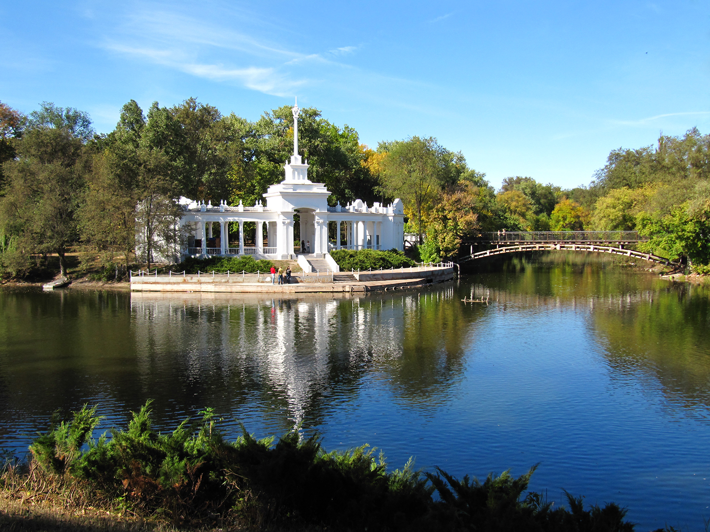
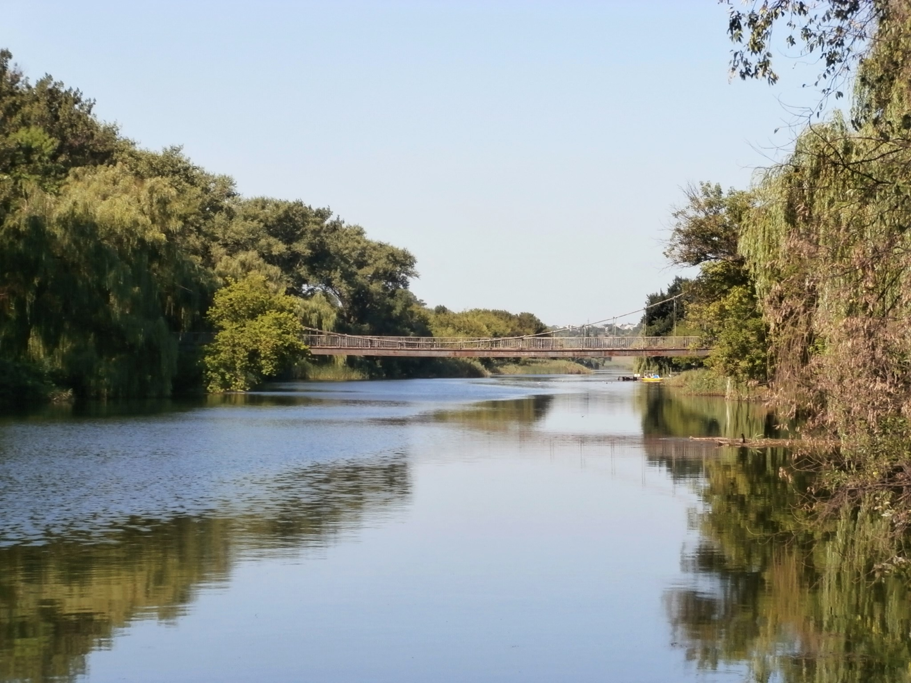

Саксагань
Саксага́нь — річка в Україні, в південно-східній частині Придніпровської височини, в межах Кам'янського та Криворізького районів Дніпропетровської області.
Довжина 144 км, площа басейну 2 025 км². Пересічна ширина річища 29—40 м. Долина річки у верхів'ї V-подібна, нижче і в межах Кривого Рогу — переважно трапецієподібна, пересічна ширина 1,5—2 км (у пониззі до 4,5 км), глибина долини до 40 м. Заплава часто однобічна (завширшки 0,3—0,5 км, у пониззі — до 1 км), відкрита, лугова, суха. Річище нерозгалужене, переважна ширина його (за винятком водосховищ: Макортівського, Саксаганського і Кресівського) 5—15 м, максимальна — 30 м. Похил річки 0,8 м/км. Швидкість течії незначна. Природний режим річки сильно змінений регулюючим впливом дамб, скиданням шахтних і промислових вод, а також відбором води на технічні потреби. Найбільші витрати води Саксагані досягають 240 м³/сек.
Інгуле́ць
Інгуле́ць (Малий Інгул) — річка на півдні України, права притока Дніпра (басейн Чорного моря).
Довжина 549 км. Площа басейну 14870 тис. км². Долина у верхній течії трапецієподібна, на окремих ділянках утворює неглибокі каньйони; її ширина до 1 км. У нижній долина терасована, завширшки до 5 км. Річище у верхній течії спрямлене, у нижній дуже звивисте. Ширина річища біля Кривого Рогу 25—30 м, глибина до 1,7 м. Похил річки — до 0,37 м/км у пониззі.
У верхній частині по каналу Дніпро—Інгулець (Світловодський та Олександрійський райони Кіровоградської області) до річки Інгулець подається дніпровська вода для забезпечення його повноводності, оздоровлення та водопостачання Кривбасу — великого гірничо-рудного центру, для якого необхідно багато води.